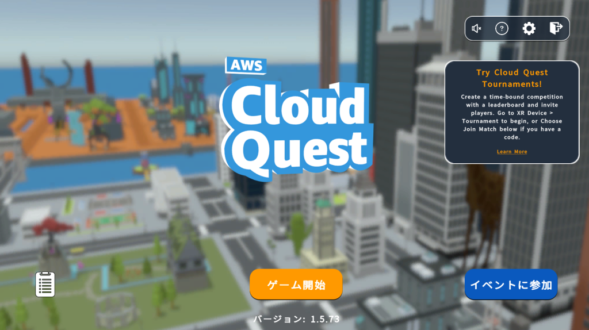
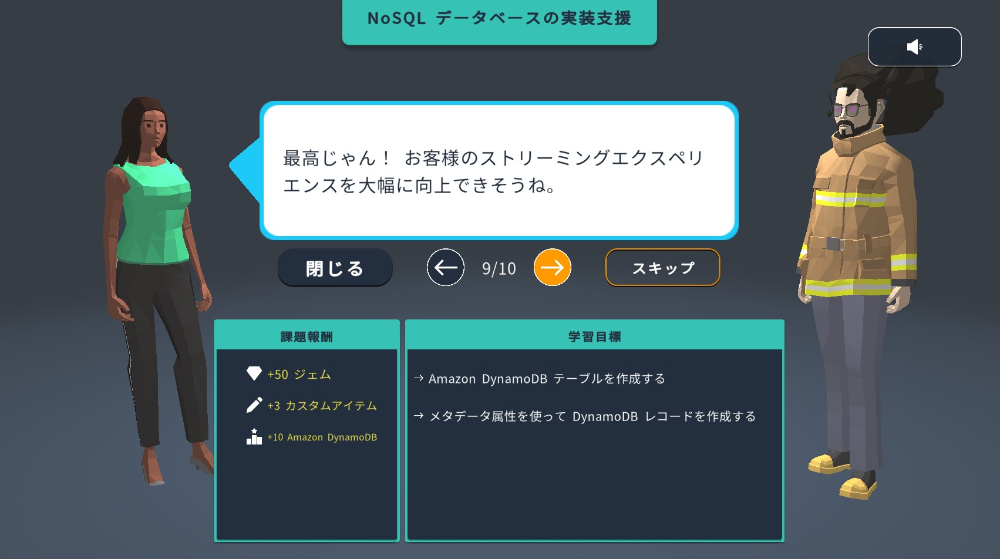
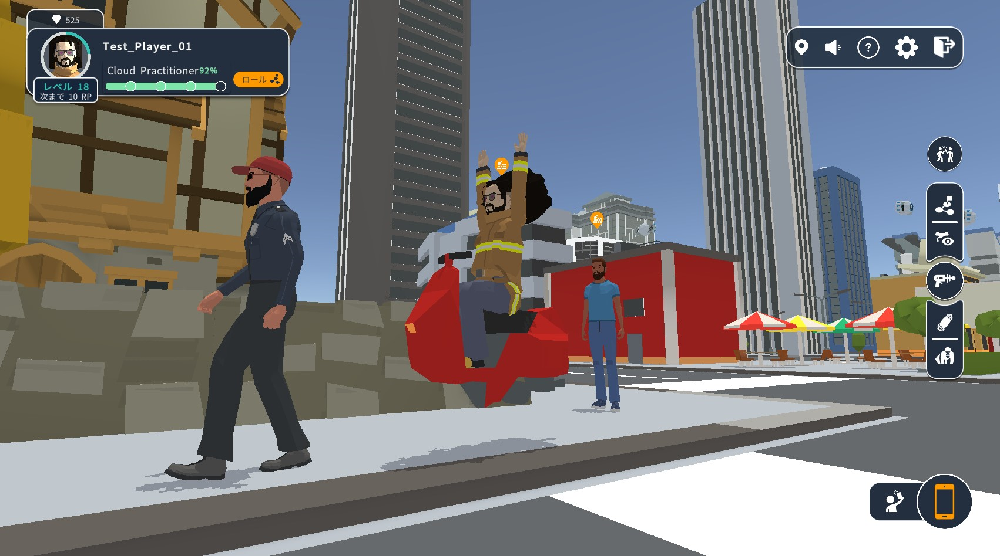
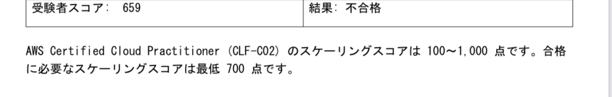

AWS 初心者は AWS Cloud Quest だけで Cloud Practitioner に合格できるか
フラー株式会社 Advent Calendar 2023 5日目
はじめに
これは フラー株式会社 Advent Calendar 2023 の5日目の記事です。4日目は Nao1215 さんの 「【Golang】hottest – ユニットテストのエラーメッセージを抽出するCLI／GitHub Actionsを作った話」 でした。
AWS Cloud Quest
2022年3月に AWS が AWS Cloud Quest を公開しました。これは何かというと、AWS のサービスや構築方法について、ゲーム内で、ストーリーに沿って出題されるソリューション構築に関する課題を、実際のAWSのアカウントを使用しながら解いていく、RPGテイストのコンテンツ（公式ブログより）です。
そして2023年10月、AWS Cloud Questの「Cloud Practitioner」が日本語対応しました。これはアカウント登録さえすれば誰でも無料でプレイできます。
以下が AWS Cloud Quest のゲーム内画面です。（公式ブログより抜粋）



これらの画像を見てみなさんはどう思ったでしょうか。
わたしはこう思いました。「マジでク〇ゲーみたいな見た目だけど、これだけやれば Cloud Practitioner に合格できたりするんか？」と。
RPGをプレイするだけで AWS の基礎知識が身につくならお得です。ちょうど AWS の資格に挑戦してみようと思った時期だったので、実際に試してみました。
自分のステータス
試験前の自分のステータスとしては、以下のような感じです
- Androidエンジニア
- サーバーサイドやインフラは未経験
- サーバーサイド Kotlin を触ってみたことぐらいはある
- AWS の EC2 や S3 などのメジャーなサービスは聞いたことがあるし、どういうサービスなのかもざっくりは知っている
- EC2 はクラウドコンピューティングやな、S3 はストレージサービスやな、とかそれぐらい
- 実際に触ったことはない
最初に結論
結論から言うとダメでした。

スコア 659/1000 ということで一見惜しいように見えますが、「これはアカン」と数日前に気づき最後に過去問を解き始めたので惜しいように見えています。おそらく AWS Cloud Quest のみで挑んでいたらもう少し低かったと思います。
何がダメだったか
とにかく試験範囲に対して学べるサービスの数が少なすぎました。
AWS Cloud Quest は文字通りクエスト方式で顧客の要望に応じて AWS サービスを構築していくのですが、メインクエストで実際に登場するサービスや概念はだいたい以下のような感じでした。
- Amazon EC2
- Amazon EC2 Auto Scaling
- Amazon S3
- Amazon VPC
- Amazon Elastic File System (EFS)
- Amazon RDS
- Amazon DynamoDB
- AWS Identity and Access Management (IAM)
- Amazon Elastic Load Balancing (ELB)
- AWS Pricing Calculator
対して、Cloud Practitioner の試験範囲の一部が以下になります。 公式のシラバスより抜粋しました。
分析:
- Amazon Athena
- AWS Data Exchange
- Amazon EMR
- AWS Glue
- Amazon Kinesis
- Amazon Managed Streaming for Apache Kafka - (Amazon MSK)
- Amazon OpenSearch Service
- Amazon QuickSight
- Amazon Redshift
アプリケーション統合:
- Amazon EventBridge
- Amazon Simple Notification Service (Amazon SNS)
- Amazon Simple Queue Service (Amazon SQS)
- AWS Step Functions
ビジネスアプリケーション:
- Amazon Connect
- Amazon Simple Email Service (Amazon SES)
クラウド財務管理:
- AWS Billing Conductor
- AWS Budgets
- AWS Cost and Usage Report
- AWS Cost Explorer
- AWS Marketplace
コンピューティング:
- AWS Batch
- Amazon EC2
- AWS Elastic Beanstalk
- Amazon Lightsail
- AWS Local Zones
- AWS Outposts
- AWS Wavelength
コンテナ:
- Amazon Elastic Container Registry (Amazon ECR)
- Amazon Elastic Container Service (Amazon ECS)
- Amazon Elastic Kubernetes Service (Amazon EKS)
カスタマーエンゲージメント:
- スタートアップ向け AWS Activate
- AWS IQ
- AWS Managed Services (AMS)
- AWS サポート
データベース:
- Amazon Aurora
- Amazon DynamoDB
- Amazon MemoryDB for Redis
- Amazon Neptune
- Amazon RDS
デベロッパーツール:
- AWS AppConfig
- AWS CLI
- AWS Cloud9
- AWS CloudShell
- AWS CodeArtifact
- AWS CodeBuild
- AWS CodeCommit
- AWS CodeDeploy
- AWS CodePipeline
- AWS CodeStar
- AWS X-Ray
エンドユーザーコンピューティング:
- Amazon AppStream 2.0
- Amazon WorkSpaces
- Amazon WorkSpaces Web
フロントエンドのウェブとモバイル:
- AWS Amplify
- AWS AppSync
- AWS Device Farm
IoT:
- AWS IoT Core
- AWS IoT Greengrass
機械学習:
- Amazon Comprehend
- Amazon Kendra
- Amazon Lex
- Amazon Polly
- Amazon Rekognition
- Amazon SageMaker
…他
長いので省略していますが、これでだいたい試験範囲サービスの半分ぐらいです。
いかがでしょうか、どれだけ AWS Cloud Quest で学べる範囲が狭いかお分かりいただけるでしょうか。
AWS Cloud Quest をクリアした後、公式の無料練習問題を解いてみた時の絶望感は忘れられません。知ってるサービス全然出てこないんだもん…
つらみ
ゲーム好きな人ならスクショを見た段階で嫌な予感がするでしょうが、ゲームとして圧倒的につまらないです。
頭にびっくりマークの吹き出しが表示されているキャラクターがメインクエストを提供してくれますが、その人物を探すのが地味に大変です。クエストがある場所を探そうとマップを開くと、一度全画面のマップに切り替わり、マップを閉じてフィールドに戻るとカメラがリセットされるので、操作キャラクターが今どっちを向いているのか頻繁に見失います。
さらにマップには向いている方向は表示されないため、自分が方向音痴なのも相まって闇雲にとりあえず動いてみて進んだ方向にキャラクターは向いているという推測をする羽目になり、無駄に時間を消費しました。
また、クエストクリア時に「好きな建物を選んでね！」みたいな表示が出て、選択した建物が建造されるというカスタマイズ要素があるのですが、「そもそもこのグラフィックではどんな建物が立ってもなあ」という気持ちになりますし、そもそもどこに建物が立ったのかもよくわからないままゲームをクリアしてしまいました。
そしてクエストをクリアすると謎に「ビルダーレベル」なるものが上がりますが、そのレベルが何の役に立つのか最後まで分かりませんでした。
このような要素に囲まれながらなんとかクリアした結果、試験には合格しないという、なんとも悲しい結末が待っていました。
余談
全然いいところが無いように書きましたが、クエストに挑戦した時に AWS のデモ環境が用意され、実際にコンソールから触って手を動かしながら学べるのは良かったです。
自分で環境を構築しようとするとどうしても課金が気になりますし、誤ってインスタンスを落とし忘れたりして無駄な料金が発生してしまうのでは…という恐怖とは無縁で手を動かせるのは利点だなと思いました。
マップ移動という無駄な要素を省いて、クエストだけプレイするような形式だったらもっと良かったかもしれません。あとはクエストの数をもっと増やしてくれれば…
おわりに
というわけで、AWS 初心者は AWS Cloud Quest だけプレイしても Cloud Practitioner には合格できません。試験に受かりたい場合はちゃんと過去問などの対策をしましょう。
AWS Cloud Practitioner 試験は折を見て再チャレンジしようかと思います。
6日目は @shogo82148 さんの「今年もアドベントカレンダー（物理）買いました」です。お楽しみに！